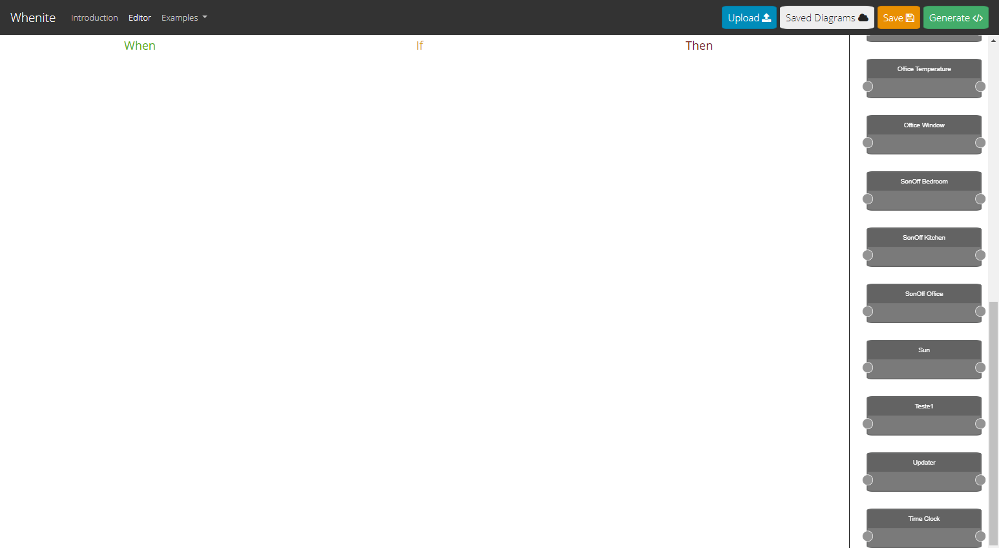

When you enter the editor page you can see the Home Assistant's logo and a message saying that the engine is trying to connect to your Home Assistant instance.
A few moments later, a pop-up appears asking for your Home Assistant IP address. You write the IP of your instance and the editor redirects you to an authentication page.
Once your login is correct and the authentication goes well, the editor is loaded!
The editor is really simple! On the top we can see a preview of how the automation is going.
On the right side, are displayed the devices that you have connected to your Home Assistant.
On the top bar, you have buttons that you can use when your automation is finished or simply if you want to save it or update one from your computer.
There are two ways to add a device to the editor:
To connect nodes, you only have to click on the output of the first node and connect it to the input of the other.
Once the nodes are connected, the orchestrator shows a preview of the automation.
The colors of the nodes that are connected changes according to it's type, everytime that a conection is created:
When a component is connected to another one, a dropdown that contains the possibilities to that type is displayed.
If a component is placed in a type that can not be yours, a message is shown to alert the user.
When you finish the automation, you can generate the YAML code that you have to copy and append to the "automations.yaml" file of your Home Assistant.
To generate the code you just need to click on the generate button, on the top bar.
When you click on the button, the editor display a menu where you need to fill the name of the automation and the description. When that data is filled, just press the generate button and a box with your YAML code appears.
If you don't want to generate the file in that moment, you can save the automation on the Local Storage of your browser. When you click the "Save" button you need to tell the name of the automation to be saved and then a message appears telling you that your automation is saved successfully.
By clicking the button "Saved Diagrams" on the top bar, you can see the automations saved on your local storage and download it.